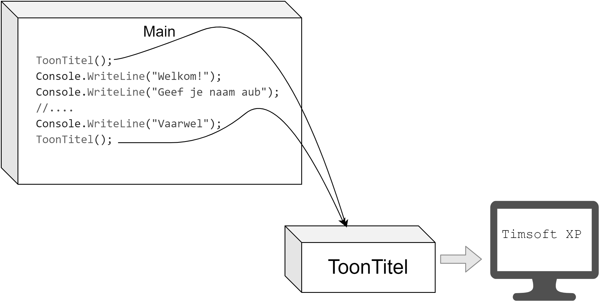
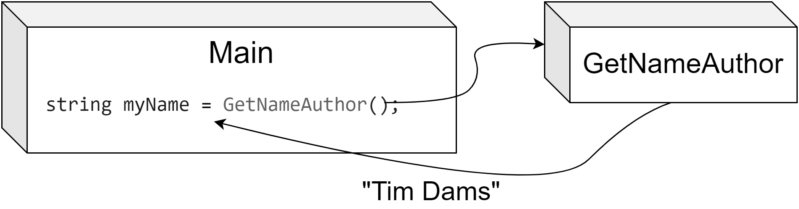
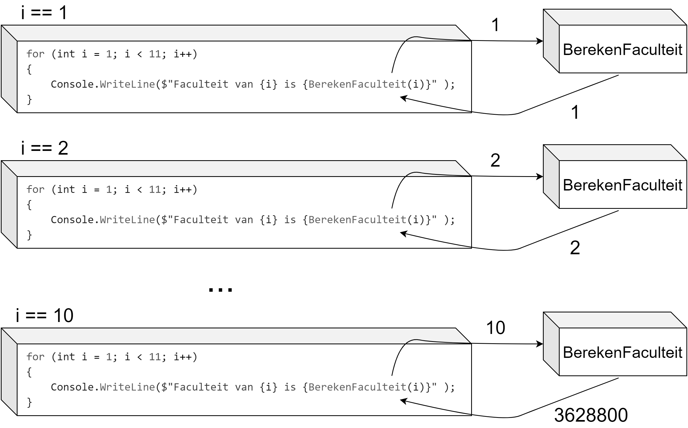
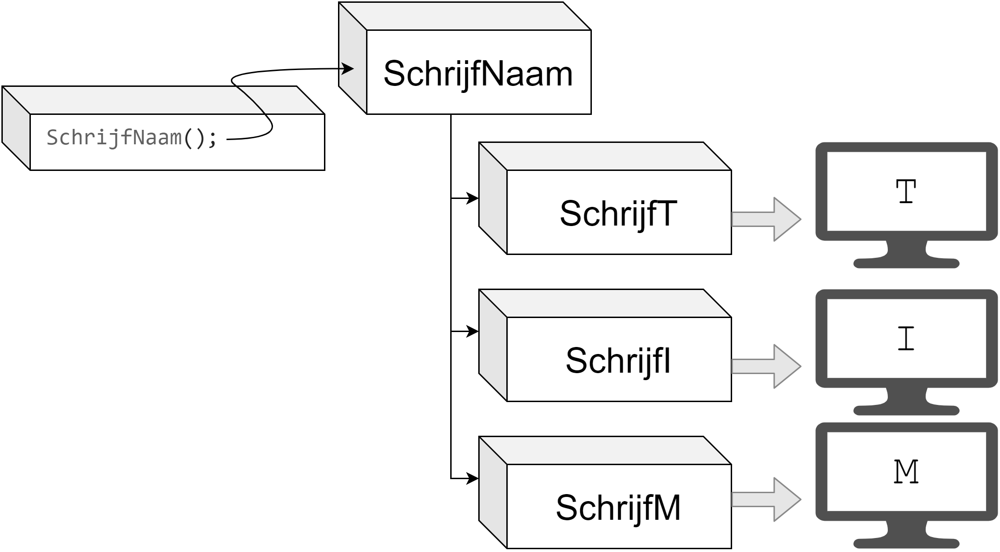
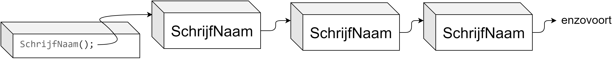
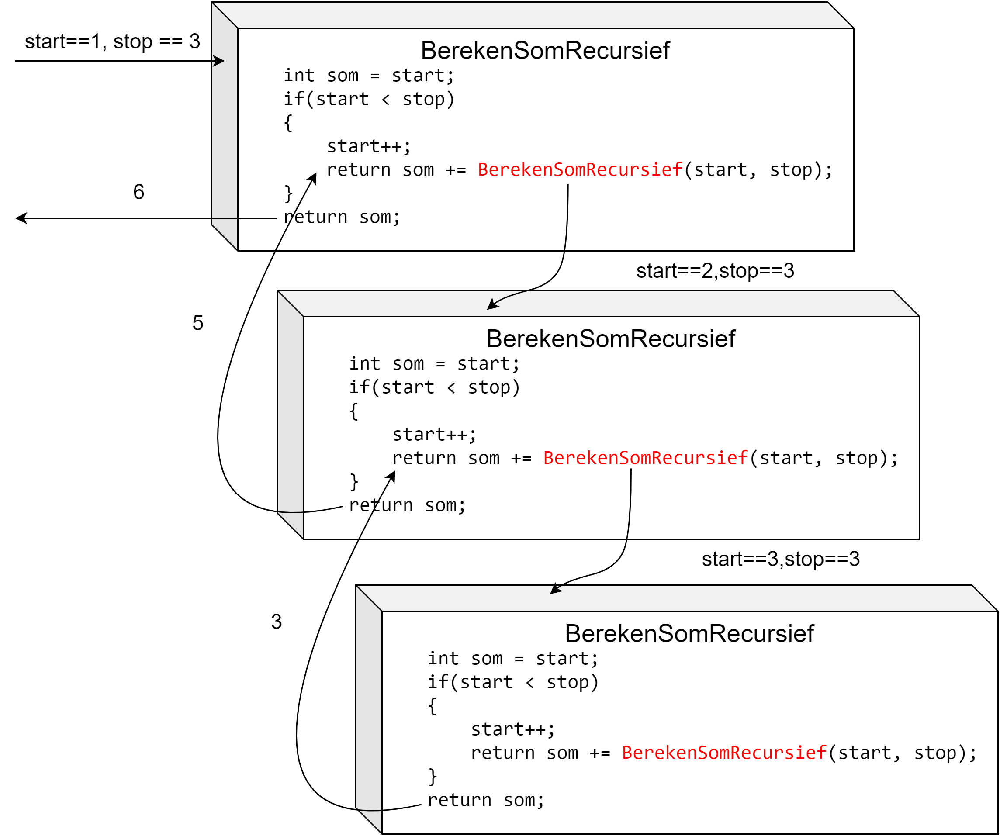
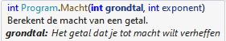

43 Methoden
“I will always choose a lazy person to do a difficult job. Because, he will find an easy way to do it.” Bill Gates, oprichter van Microsoft.
Het is je misschien nog niet opgevallen, maar sinds het vorige hoofdstuk zijn we de jacht begonnen op zo weinig mogelijk code te schrijven met zoveel mogelijk rendement. Loops waren een eerste stap in de goede richting. De volgende zijn methoden! Tijd om nog luier te worden.
Veel code die we hebben geschreven wordt meerdere keren, al dan niet op verschillende plaatsen, gebruikt. Dit verhoogt natuurlijk de foutgevoeligheid. Door het gebruik van methoden kunnen we de foutgevoeligheid van de code verlagen omdat de code maar op 1 plek staat én maar 1 keer dient geschreven te worden. Echter, ook de leesbaarheid en dus onderhoudbaarheid van de code wordt verhoogd.
Beeld je eens dat we geen gebruik konden maken van de vele .NET bibliotheken. Stel je voor dat Console.WriteLine niet bestond? Telkens als we dan iets in C# naar het scherm wilden sturen moesten we de volledige interne code van WriteLine uitschrijven. Voor de geïnteresseerden, dat zou er (ongeveer) als volgt uitzien:
fixed (byte* p = bytes)
{
if (useFileAPIs)
{
int numBytesWritten;
Interop.Kernel32.WriteFile(hFile, p, bytes.Length, out numBytesWritten, IntPtr.Zero));
}
else
{
//enz.Dat is aardig wat bizarre code he? En ik toon maar een stuk. Kortom: we mogen blij zijn dat methoden bestaan. Tijd om ze eens van dichterbij te bekijken!
Trouwens. Het is heel normaal dat voorgaande code je zenuwachtig maakt. Negeer ze maar!1
43.1 Werking van methoden
Een methode (ook wel functie genoemd) is in C# een blok code dat specifieke taken uitvoert. Een methode bestaat uit één of meerdere statements, kan herhaaldelijk worden aangeroepen met of zonder extra parameters, en kan een resultaat teruggeven. Methoden kunnen vanuit elk deel van je code worden aangeroepen.
Je gebruikt al sinds les 1 methoden. Telkens je Console.WriteLine() gebruikt, roep je een methode aan (genaamd WriteLine).
Methoden in C# zijn herkenbaar aan de ronde haakjes achteraan, al dan niet met actuele parameters tussen. Alles wat je nu gaat zien heb je al gebruikt. Het grote verschil zal zijn dat we nu ook zelf methoden gaan definiëren, en niet enkel bestaande methoden gebruiken.
Methoden hebben als voordeel dat je herbruikbare stukken code kunt gebruiken en dus niet steeds deze code overal moet kopiëren en plakken. Daarnaast zullen methoden je code ook overzichtelijker maken.
43.1.1 Methode syntax
De basis-syntax van een methode ziet er als volgt uit (de werking van het keyword static leg ik uit in hoofdstuk 11):
static returntype MethodeNaam(optioneel_parameters)
{
//code van methode
}De eerste lijn noemen we de methode-signatuur. Deze lijn verteld alles dat je moet weten om met de methode te werken (returntype, naam en eventuele parameters).
Vervolgens kan je deze methode elders oproepen als volgt, indien de methode geen parameters vereist:
MethodeNaam();Dat is een mondvol. We gaan daarom de methoden even stapsgewijs leren kennen. Let’s go!
43.1.2 Een eenvoudige methode
Beeld je in dat je een applicatie moet maken waarin je op verschillende plaatsen de naam van je programma moet tonen. Zonder methoden zou je telkens moeten schrijven Console.WriteLine("Timsoft XP");
Als je later de naam van het programma wilt veranderen naar iets anders (bv. Timsoft 11) dan zal je manueel overal de titel moeten veranderen in je code. Met een methode hebben we dat probleem niet meer. We schrijven daarom een methode ToonTitel als volgt:
static void ToonTitel()
{
Console.WriteLine("Timsoft XP");
}Vanaf nu kan je eender waar in je programma deze methode aanroepen door te schrijven:
ToonTitel();Volgend programma’tje toont dit:
namespace Demo1
{
internal class Program
{
static void ToonTitel()
{
Console.WriteLine("Timsoft XP");
}
static void Main(string[] args)
{
ToonTitel();
Console.WriteLine("Welkom!");
Console.WriteLine("Geef je naam aub");
//....
Console.WriteLine("Vaarwel");
ToonTitel();
}
}
}Volgende afbeelding toont hoe je programma doorheen de code loopt. De pijlen geven de flow aan:

43.1.3 Main is ook een methode
Zoals je misschien al begint te vermoeden is dus de Main waar we steeds onze code schrijven ook een methode. Een console-applicatie heeft een startpunt nodig en daarom begint ieder programma in deze methode, maar in principe kan je even goed je programma op een andere plek laten starten.
Wat denk je trouwens dat je dit doet?
static void Main(string[] args)
{
Console.WriteLine("Ik zit vast!");
Main(); //Endless loop incoming!
}string[] args is een verhaal apart en zullen we in het volgende hoofdstuk bekijken. Ik verklap alvast dat je via deze args opstartparameters aan je programma kan meegeven tijdens het opstarten (bijvoorbeeld explorer.exe google.com) zodat je code hier iets mee kan doen.
43.2 Returntypes van methoden
Voorgaande methode gaf niets terug. Dat kon je zien aan het keyword void (letterlijk: leegte).
Vaak willen we echter wel dat de methode iets teruggeeft. Bijvoorbeeld het resultaat van een berekening.
Het returntype van een methode geeft aan wat het type is van de data die de methode als resultaat teruggeeft bij het beëindigen ervan. Eender welk datatype kan hiervoor gebruikt worden (int, string, char, float, enz.). Ook enum datatypes kunnen als returntype in methoden gebruikt worden (en later ook objecten, wat we in hoofdstuk 10 zullen ontdekken).
43.2.1 return keyword
Het is belangrijk dat in je methode het resultaat ook effectief wordt teruggegeven, dit doe je met het keyword return gevolgd door de variabele die moet teruggeven worden.
Denk er dus aan dat deze variabele van het type is dat je hebt opgegeven als zijnde het returntype. Van zodra je return gebruikt zal je op die plek uit de methode ‘vliegen’.
Wanneer je een methode maakt die iets teruggeeft (dus een ander returntype dan void) is het ook de bedoeling dat je het resultaat van die methode opvangt en gebruikt. Je kan bijvoorbeeld het resultaat van de methode in een variabele bewaren. Dit vereist dat die variabele dan van hetzelfde returntype is!
Volgend voorbeeld bestaat uit een methode die de naam van de auteur van je programma teruggeeft:
static string VerkrijgAuteurNaam()
{
return "Tim Dams";
}Een mogelijke manier om deze methode in je programma te gebruiken zou nu kunnen zijn:
string myName = VerkrijgAuteurNaam();
Maar ook dit zal werken:
Console.WriteLine(VerkrijgAuteurNaam());Of verderop misschien als volgt:
Console.WriteLine($"Auteur van dit boek: {VerkrijgAuteurNaam()}");Je mag zowel literals als variabelen en zelfs andere methode-aanroepen plaatsen achter het return keyword. Zolang het maar om een expressie gaat die een resultaat heeft kan dit. Voorgaande methode kunnen we dus ook schrijven als:
static string VerkrijgAuteurNaam()
{
string naam= "Tim Dams";
return naam;
}43.3 Een uitgewerkte methode
De faculteit van een getal n schrijven we als n!. Het is het product van alle positieve getallen van 1 tot en met n, waarbij 0! gelijk is aan 1. Hier een voorbeeld van een methode die de faculteit van 5 berekent, 5!. We willen dus 1*2*3*4*5 berekenen, wat 120 is. De oproep van de methode gebeurt vanuit de Main-methode:
internal class Program
{
static int FaculteitVan5()
{
int resultaat = 1;
for (int i = 1; i <= 5; i++)
{
resultaat *= i;
}
return resultaat;
}
static void Main(string[] args)
{
Console.WriteLine($"Faculteit van 5 is {FaculteitVan5()}");
}
}43.3.1 void
Indien je methode niets teruggeeft wanneer de methode eindigt (bijvoorbeeld indien de methode enkel tekst op het scherm toont) dan dien je dit ook aan te geven. Hiervoor gebruik je het keyword void.
Een voorbeeld:
static void ToonVersie()
{
Console.WriteLine("Dit is versie 8.31 ");
}Deze methode moet je dus als volgt aanroepen:
ToonVersie();Volgende 2 manieren werken niet bij een methode met void als returntype:
string result = ToonVersie(); //MAG NIET!!
Console.WriteLine(ToonVersie()); // MAG NIET!43.3.2 return
Je mag het return keyword eender waar in je methode gebruiken. Weet wel dat van zodra een statement met return wordt bereikt de methode ogenblikkelijk afsluit en het resultaat achter return teruggeeft.
Soms is dit handig zoals in volgende voorbeeld:
static string WindRichting()
{
Random r = new Random();
switch (r.Next(0,4))
{
case 0:
return "noord";
break;
case 1:
return "oost";
break;
case 2:
return "zuid";
break;
case 3:
return "west";
break;
}
return "onbekend";
}Merk op dat de onderste lijn (19) nooit zal bereikt worden. Toch vereist C# dit!
Dacht je nu echt dat ik weg was?! Het is me opgevallen dat je niet altijd de foutboodschappen in VS leest. Ik blijf alvast uit jouw buurt als je zo doorgaat. Doe jezelf (en mij) dus een plezier en probeer die foutboodschappen in de toekomst te begrijpen. Er zijn er maar een handvol en bijna altijd komen ze op hetzelfde neer. Neem nou de volgende:Not all code paths return a value Die ga je nog vaak tegenkomen!
Bovenstaande foutboodschap zal je vaak krijgen en geeft altijd aan dat er bepaalde delen binnen je methode zijn waar je kan komen zonder dat er een return optreedt. Het einde van de methode wordt met andere woorden bereikt zonder dat er iets uit de methoden terug komt (wat enkel bij void mag).
Foutboodschappen hebben de neiging om gecompliceerder te klinken dan de effectieve fout die ze beschrijven. Een beetje zoals een lector die lesgeeft over iets waar hij zelf niets van begrijpt.
43.4 Parameters doorgeven
Methoden zijn handig vanwege de herbruikbaarheid. Wanneer je een methode hebt geschreven om de sinus van een hoek te berekenen, dan is het echter ook handig dat je de hoek als parameter kunt meegeven zodat de methode kan gebruikt worden voor eender welke hoekwaarde.
Indien er wel parameters nodig zijn dan geef je die mee als volgt:
MethodeNaam(parameter1, parameter2, …);Je hebt dit ook al geregeld gebruikt. Wanneer je tekst op het scherm wilt tonen dan roep je de WriteLine methode aan en geef je 1 parameter mee, namelijk hetgeen dat op het scherm moet komen.
43.4.1 Methoden met formele parameters
Om zelf een methode te definiëren die 1 of meerdere parameters aanvaardt, dien je per parameter het datatype en een tijdelijk naam (identifier) te definiëren (formele parameters) in de methode-signatuur
Als volgt:
static returntype MethodeNaam(type parameter1, type parameter2)
{
//code van methode
}Deze formele parameters zijn nu beschikbaar binnen de methode om mee te werken naar believen.
Stel bijvoorbeeld dat we onze FaculteitVan5 willen veralgemenen naar een methode die voor alle getallen werkt, dan zou je volgende methode kunnen schrijven:
static int BerekenFaculteit(int grens)
{
int resultaat = 1;
for (int i = 1; i <= grens; i++)
{
resultaat *= i;
}
return resultaat;
}De naam grens kies je zelf. Maar we geven hier dus aan dat de methode BerekenFaculteit enkel kan aangeroepen worden indien er 1 actuele parameter van het type int wordt meegegeven.
Aanroepen van de methode gebeurt dan als volgt:
int getal = 5;
int resultaat = BerekenFaculteit(getal);Of sneller:
int resultaat = BerekenFaculteit(5);Als we even later resultaat dan zouden gebruiken zal er de waarde 120 in zitten.
Parameters worden “by value” meegegeven (zie het hoofdstuk over Arrays hierna) wat wil zeggen dat een kopie van de waarde wordt meegegeven. Als je dus in de methode de waarde van de parameter aanpast, dan heeft dit géén invloed op de waarde van de originele parameter waar je de methode aanriep.
Je zou nu echter de waarde van getal kunnen aanpassen (door bijvoorbeeld aan de gebruiker te vragen welke faculteit moet berekend worden) en je code zal nog steeds werken.
Veel beginnende programmeurs zijn soms verward dat de naam van de parameter in de methode (bv. grens) niet dezelfde moet zijn als de naam van de variabele (of literal) die we bij de aanroep meegeven.
Het is echter logisch dat deze niet noodzakelijk gelijk moeten zijn: het enige dat er gebeurt is dat de methodeparameter de waarde krijgt die je meegeeft, ongeacht van waar de parameter komt.
En wat als je de faculteiten wenst te kennen van alle getallen tussen 1 en 10? Dan zou je schrijven:
for (int i = 1; i < 11; i++)
{
Console.WriteLine($"Faculteit van {i} is {BerekenFaculteit(i)}" );
}
Dit zal als resultaat geven:
Faculteit van 1 is 1
Faculteit van 2 is 2
Faculteit van 3 is 6
Faculteit van 4 is 24
Faculteit van 5 is 120
Faculteit van 6 is 720
Faculteit van 7 is 5040
Faculteit van 8 is 40320
Faculteit van 9 is 362880
Faculteit van 10 is 3628800Merk op dat dankzij je methode, je véél code maar één keer moet schrijven, wat de kans op fouten verlaagt.
43.4.2 Volgorde van parameters
De volgorde waarin je je parameters meegeeft bij de aanroep van een methode is belangrijk. De eerste variabele wordt aan de eerste parameter toegekend, enz. Het volgende voorbeeld toont dit.
Stel dat je een methode hebt:
static void ToonDeling(double teller, double noemer)
{
if(noemer != 0)
Console.WriteLine(teller/noemer);
else
Console.WriteLine("Een zwart gat ontstaat!");
}Deze 2 aanroepen zullen dus een andere output geven:
ToonDeling(3.5 , 2.1 );
ToonDeling(2.1 , 3.5 );Zeker wanneer je met verschillende types als formele parameters werkt is de volgorde belangrijk. Het verschil met de vorige methode is hier wel dat VS jou zal helpen wanneer je volgorde niet klopt.
Stel dat we volgende methode hebben gemaakt:
static void ToonInfo(string name, int age)
{
Console.WriteLine($"{name} is {age} old");
}Deze aanroep is correct:
ToonInfo("Tim", 37);Maar deze is FOUT en zal niet compileren:
ToonInfo(37, "Tim"); //mag niet!43.4.3 Doorgeven van parameters
Parameters kunnen op 2 manieren worden doorgegeven aan een methode:
- By value : hierbij wordt een kopie gemaakt van de huidige waarde. Het is die kopie die wordt meegegeven.
- by reference: het adres (pointer of reference) naar de actuele parameter wordt meegegeven. Aanpassingen aan de actuele parameter in de methode zal daardoor ook zichtbaar zijn binnen de scope van de originele variabele. Parameters by reference komen pas vanaf hoofdstuk 9 van pas2.
Het effect van manier 1 is hopelijk duidelijk: wanneer je in een methode de inhoud van een actuele parameter aanpast, dan heeft dat geen gevolg op de originele variabele die we meegaven bij de methode-aanroep!
Dit zien we in dit programma:
static void JaartjeOuder(int leeftijd)
{
leeftijd++;
Console.WriteLine($"Hoera. Je bent {leeftijd} jaar geworden.");
}
static void Main(string[] args)
{
int mijnLeeftijd = 40;
Console.WriteLine($"Je bent {mijnLeeftijd} jaar.");
JaartjeOuder(mijnLeeftijd);
Console.WriteLine($"Je bent {mijnLeeftijd} jaar.");
}In de output zien we dat mijnLeeftijd niet werd aangepast in de methode:
Je bent 40 jaar.
Hoera. Je bent 41 jaar geworden.
Je bent 40 jaar.43.4.4 Methoden nesten
In het begin ga je vooral vanuit je Main methoden aanroepen, maar dat is geen verplichting. Je kan ook vanuit methoden andere methoden aanroepen. Je kan zelfs vanuit die aangeroepen methode weer andere aanroepen, enz.
Volgende (nutteloze) programma’tje toont dit in actie:
static void SchrijfT()
{
Console.Write("T");
}
static void SchrijfI()
{
Console.Write("I");
}
static void SchrijfM()
{
Console.Write("M");
}
static void SchrijfNaam()
{
SchrijfT();
SchrijfI();
SchrijfM();
}
public static void Main()
{
SchrijfNaam();
}Er verschijnt “Tim” op het scherm.

43.4.5 Bugs met methoden
Wanneer je programma’s complexer worden moet je zeker opletten dat je geen oneindige methode-lussen creëert. Zie je de fout in volgende code?
public static void Main()
{
SchrijfNaam();
}
static void SchrijfNaam()
{
SchrijfNaam();
Console.WriteLine("Klaar?");
}Deze code heeft een methode die zichzelf aanroept, zonder dat deze ooit afsluit. Hierdoor komen we dus in een oneindige aanroep van de methode SchrijfNaam. Dit programma zal een leeg scherm tonen (daar er nooit aan de tweede lijn in de methode wordt geraakt) en dan crashen wanneer het werkgeheugen van de computer op is.

43.4.5.1 Lokale functies…en waarom je ze beter niet gebruikt
Sinds C# 7.0 kan je methoden definiëren binnenin een andere methode. Dit noemt men lokale functies (local functions). Alhoewel ze zeker hun nut hebben, is het in deze fase van C# leren geen goed idee om lokale functies te gebruiken.
Het is veel belangrijker dat je eerst goed leert methoden schrijven. Beginnende programmeurs schrijven soms per ongeluk een lokale functies. Dan ontdekken ze dat ze die methode nergens kunnen aanroepen. Lokale functies zijn alleen oproepbaar binnen de methode waarin ze zijn gedefinieerd.
Kortom, zorg dat je nooit dit schrijft!
static void Main(string[] args)
{
TimVindtDitNietLeuk();
static void TimVindtDitNietLeuk() //NIET DOEN!
{
Console.WriteLine("Doe dit niet!");
}
}Maar wel
static void TimVindtDitNietLeuk() //Beter!
{
Console.WriteLine("Doe dit niet!");
}
static void Main(string[] args)
{
TimVindtDitNietLeuk();
}
Recursie is een geavanceerd programmeerconcept wat niet in dit boek wordt besproken (enkel in hoofdstuk 18 gaan we recursie nog kort ontmoeten), maar laten we het hier kort toelichten. Recursieve methoden zijn methoden die zichzelf aanroepen maar wél op een gegeven moment stoppen wanneer dat moet gebeuren. Volgend voorbeeld is een recursieve methode om de som van alle getallen tussen start en stop te berekenen:
static int BerekenSomRecursief(int start, int stop)
{
int som = start;
if(start < stop)
{
start++;
return som += BerekenSomRecursief(start, stop);
}
return som;
}Je herkent recursie aan het feit dat de methode zichzelf aanroept. Maar een controle voorkomt dat die aanroep blijft gebeuren zonder dat er ooit een methode wordt afgesloten. We krijgen 6 terug (1+2+3) als we de methode als volgt aanroepen:
int einde = BerekenSomRecursief(1,3);
43.4.6 Commentaar aan methoden toevoegen
Het is aan te raden om steeds boven een methode een nieuwe vorm van commentaar te plaatsen als volgt (dit werkt enkel bij methoden): ///
Visual Studio zal dan automatisch de parameters verwerken van je methode zodat je vervolgens enkel nog het doel van iedere parameter moet schrijven.
Stel dat we een methode hebben geschreven die de macht van een getal berekent (wat dom is…er bestaat al zoiets als Math.Pow). We zouden dan volgende commentaar toevoegen:
/// <summary>
/// Berekent de macht van een getal.
/// </summary>
/// <param name="grondtal">Het getal dat je tot macht wilt verheffen</param>
/// <param name="exponent">De exponent van de macht</param>
/// <returns></returns>
static int Macht(int grondtal, int exponent)
{
int result = grondtal;
for (int i = 1; i < exponent; i++)
{
result *= grondtal;
}
return result;
}Wanneer we nu elders de methode Macht gebruiken dan krijgen we automatische extra informatie:

Toch nieuwsgierig hoe wat er allemaal achter de schermen gebeurt? Voorgaande code komt uit github.com/dotnet/runtime/blob/main/src/libraries/System.Console/src/System/ConsolePal.Windows.cs, waar je ook alle andere broncode van de dotnet runtime zal terugvinden.↩︎
Het tweede punt mag je volledig negeren als je geen flauw benul had wat er net werd gezegd. Ik kom hier later in de volgende hoofdstukken nog uitgebreid op terug!↩︎